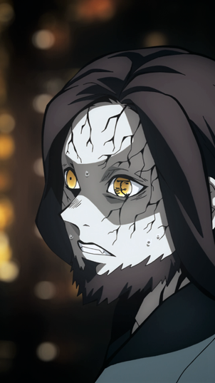

-
Rokuro had the appearance of an older man with a stocky build and pale skin that was decorated with black, vein-like patterns down his face, arms and legs. He had long, dark purple hair that he left down, and a short, jagged beard around his jawline, as well as golden, cat-like eyes, with the kanjis for "Lower Two" etched onto his left eye.
-
He wore what appeared to be a dark cyan version of a typical karate gi.
Rokuro (轆ろく轤ろ Rokuro?) was a member of the Twelve Kizuki, having held the position of Lower Rank Two (下か弦げんの弐に Kagen no Ni?).

Appearance
Personality
As with most demons, Rokuro greatly respected and feared Muzan Kibutsuji as his leader. After almost every Lower Ranks had been killed by the Demon King, Rokuro was visibly scared that the same would happen to him and resorted to begging his leader for more blood to increase his strength so he wouldn’t die, showing quite a somewhat cowardly demeanour. However, in spite of this, Rokuro appeared to be very confident in the potential of his abilities as a demon, since he claimed that if he received just a little more of Muzan's blood he could definitely become a strong fighter worthy of being in the ranks of the Twelve Kizuki, which showed he had a great resolve and passion for his role.
Synopsis
Rehabilitation Training Arc
-
Following the death of Rui, Lower Rank Five, Rokuro was summoned to the Infinity Castle by Nakime. He was one of the two to first appear, along with Enmu. As he looked about at the strange place he was in, he was suddenly transported to a platform at the centre, looking around for any clue to his situation. Before them were two demons, Nakime and a female stranger.
-
Confused and wondering at who she may be, he becomes frightened when the demon commands them to crouch down and kneel in a familiar, threatening voice. He immediately recognize her as a disguised Muzan Kibutsuji and stays silent. Muzan informs them about the demise of Rui and angrily asks why they are so weak.
-
Rokuro listen as Muzan lectures them about their place with the Twelve Kizuki, and how it is simple the starting point where they can become useful to him. He rants about how the Upper Ranks have remained unchanged for over a century, whilst the Lowers are continually replace. Rokuro then overhears Muzan suddenly threatening Kamanue over his doubt in his expectations.[3] Able to read the minds of his servants, Muzan promptly takes Lower Six in a monstrous arm and devours him mercilessly, showering Rokuro and the others in blood.
-
As Mukago is questioned of her loyalty to him and promptly killed for refuting Muzan's words, Rokuro stays quiet, unwilling to die and seeing Muzan's merciless nature in action. He then watches as Wakuraba attempts to escape and run away from the Infinity Castle, shocked at his decision to directly challenge Muzan's power. When Lower Three is decapitated, his head is tossed before Rokuro and Enmu to scare them. As the last two demons remaining in the purging of the Lower Ranks, Muzan asks for their last words. At this, Rokuro claims he can still be of use to the Demon King.
-
Curious, Muzan asks how he can be useful currently: Rokuro asks for a portion of his blood and claims he will acclimate without dying and fight as a more powerful demon. Upon hearing this, Muzan angrily asks how he can make such an "order", denouncing the demon as shameless. Rokuro begs for forgiveness and claims he misunderstood his intentions, but Muzan only tells him that his word is absolute, telling the Lower Two that he deserved to die before killing him.
Abilities and Powers
Overall Abilities: As Lower Rank Two, Rokuro was the second strongest demon among the Lower Ranks, though his true strength is unknown. He would have evidently been a very strong demon as the only demon ranked above him was the very powerful Enmu, and he claims that he can acclimate a portion of Muzan's blood without fail, which has been shown to induce torturous pain even in low amounts. Muzan's statement that the extremely formidable Rui can match Lower Rank Two and One in strength could be a potential hint to Rokuro's power